Campeones de la NBA
Todos los campeones NBA de la historia:
LOS ÁNGELES LAKERS
17 campeonatos
(1949,1950,1952,1953,1954,1972,1980,1982,1985,1987,1988,2000,2001,2002,2009,2010,2020)
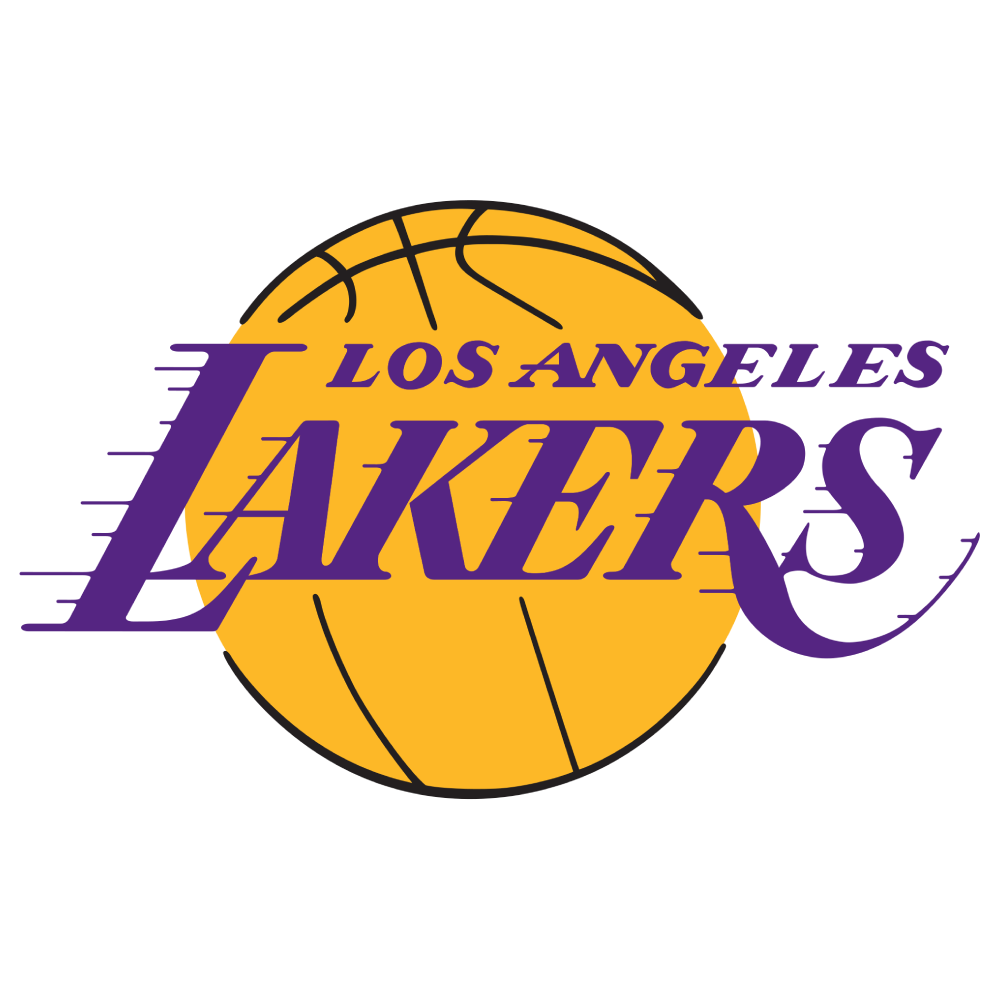
BOSTON CELTICS
17 campeonatos
(1957,1959,1960,1961,1962,1963,1964,1965,1966,1968,1969,1974,1976,1981,1984,1986,2008)

GOLDEN STATE WARRIORS
7 campeonatos
(1947,1955,1975,2015,2017,2018,2022)

CHICAGO BULLS
6 campeonatos
(1991,1992,1993,1996,1997,1998)
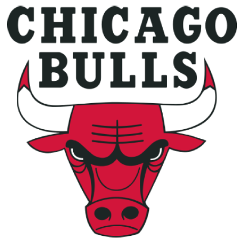
SAN ANTONIO SPURS
5 campeonatos
(1999,2003,2005,2007,2014)
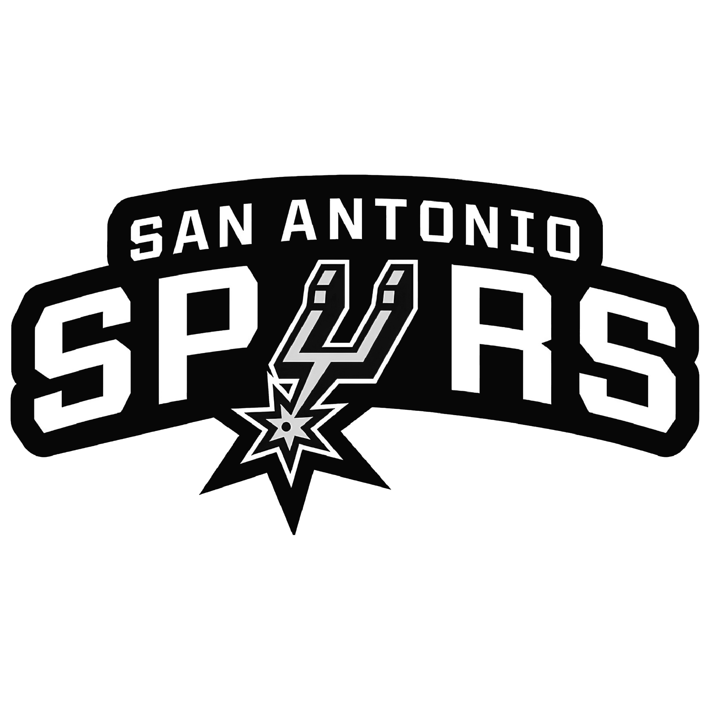
PHILADELPHIA 76ERS
3 campeonatos
(1955,1967,1983)
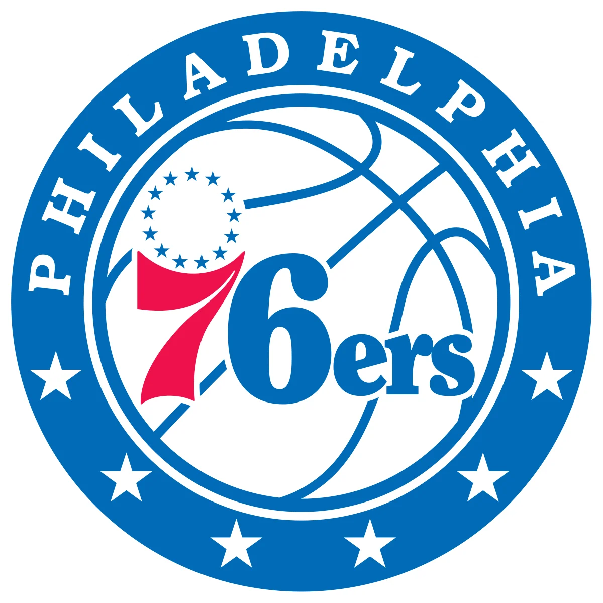
DETROIT PISTONS
3 campeonatos
(1989,1990,2004)
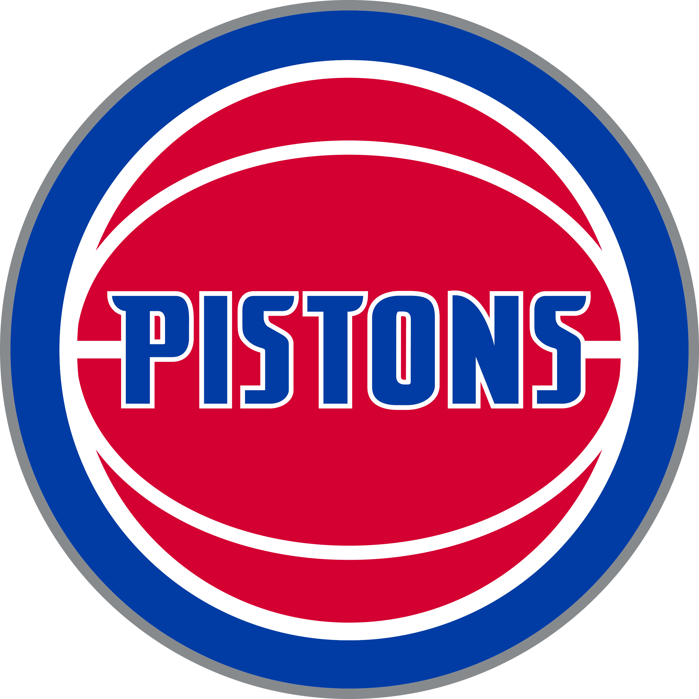
MIAMI HEAT
3 campeonatos
(2006,2012,2013)
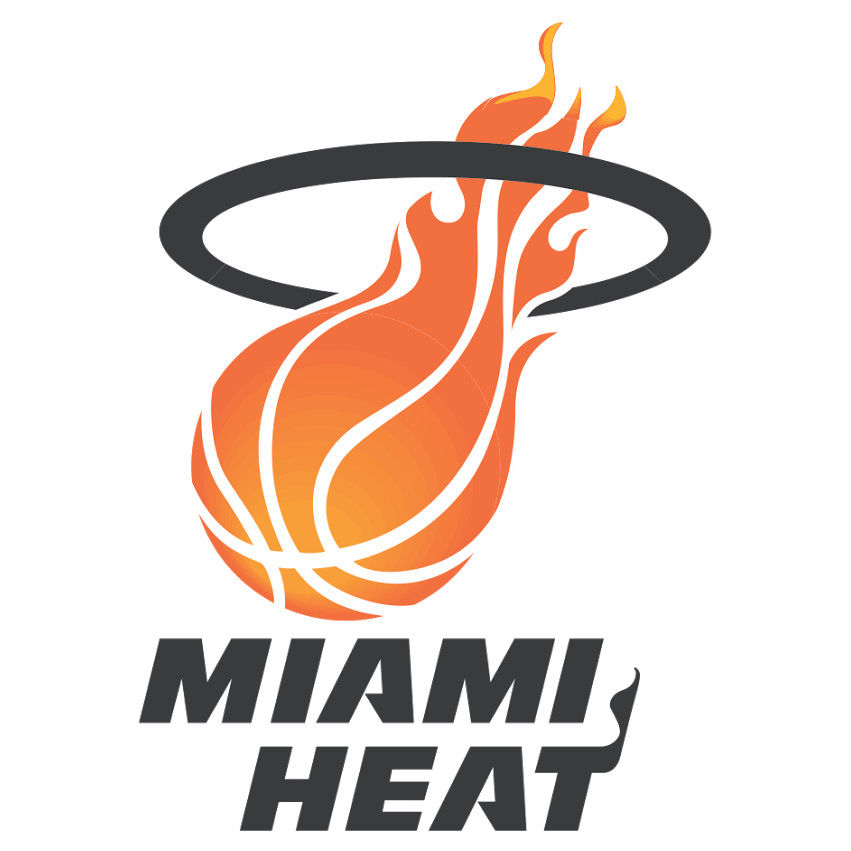
NEW YORK NICKS
2 campeonatos
(1970,1973)
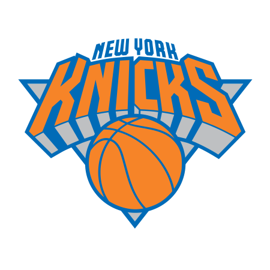
HOUSTON ROCKETS
2 campeonatos
(1994,1995)
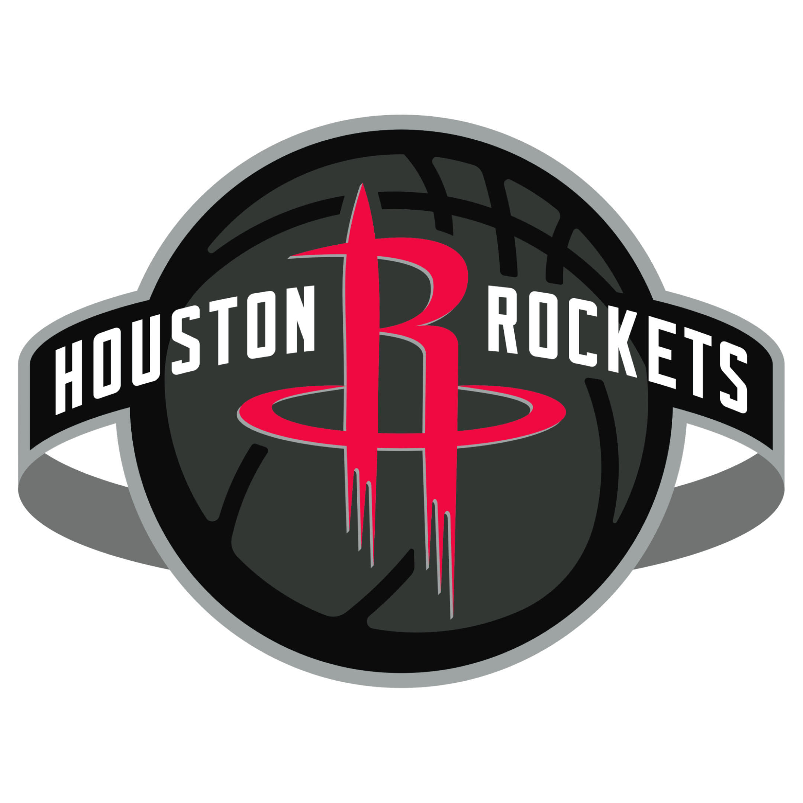
MILWAUKEE BUCKS
2 campeonatos
(1971,2021)
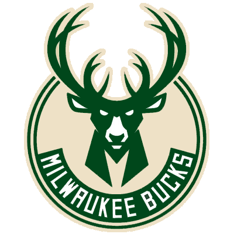
WASHINGTON WIZARDS
2 campeonatos
(1948,1978)

CLEVELAND CAVALIERS
1 campeonato
(2016)
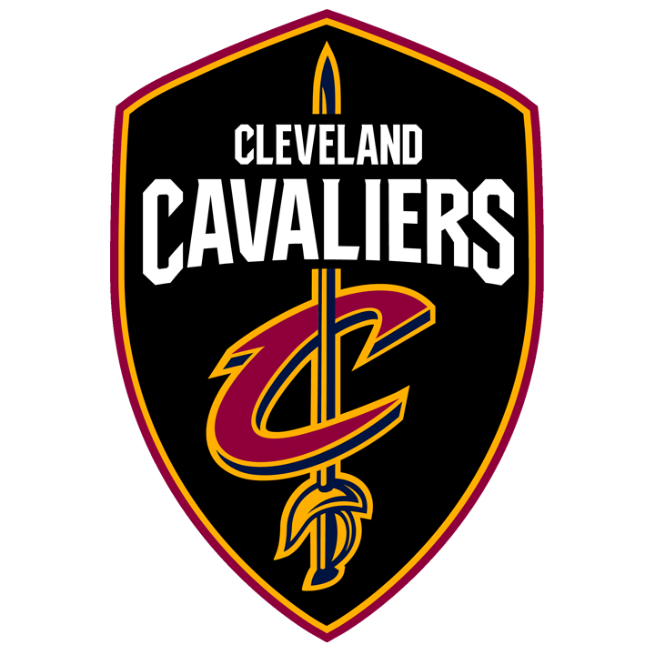
ATLANTA HAWKS
1 campeonato
(1958)
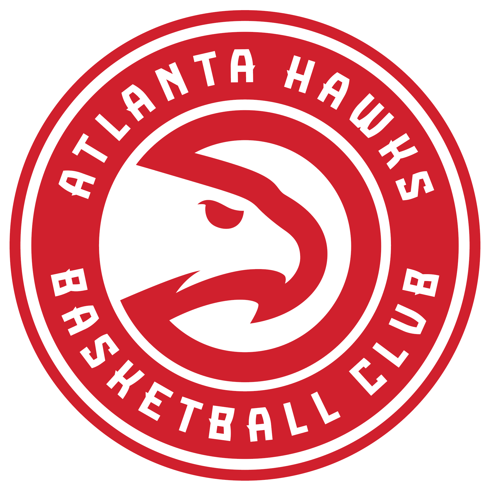
Portland Trail Blazers
1 campeonato
(1977)
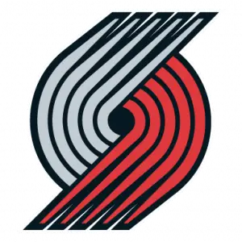
Dallas Mavericks
1 campeonato
(2011)
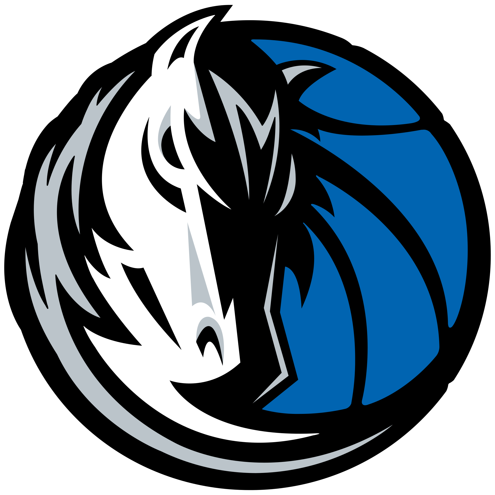
Seattle Supersonics (actual OKC)
1 campeonato
(1979)
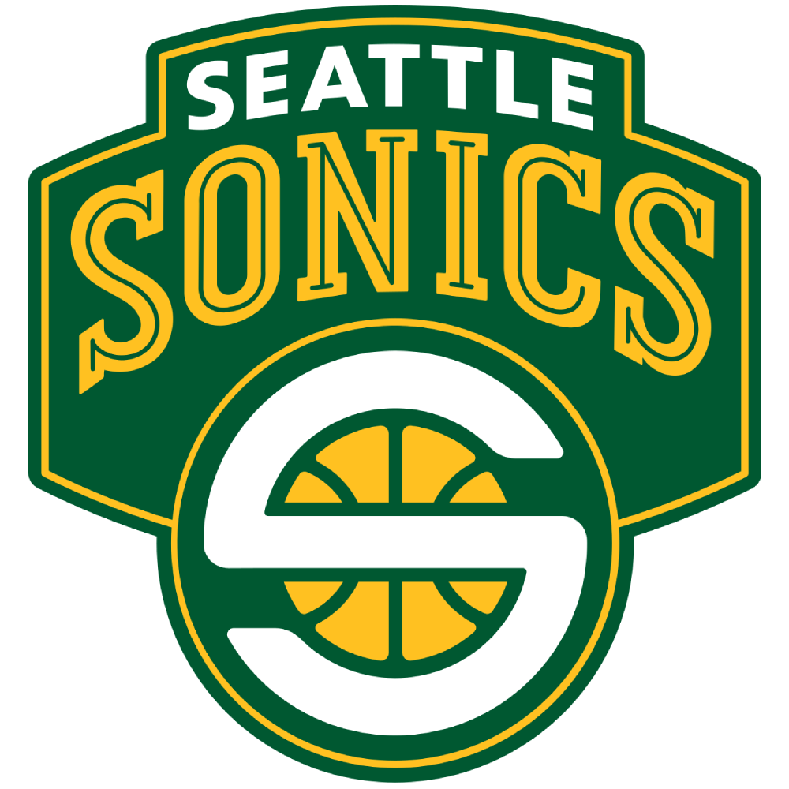
CLEVELAND CAVALIERS
1 campeonato
(2016)
CLEVELAND CAVALIERS
1 campeonato
(2016)